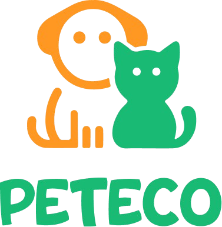
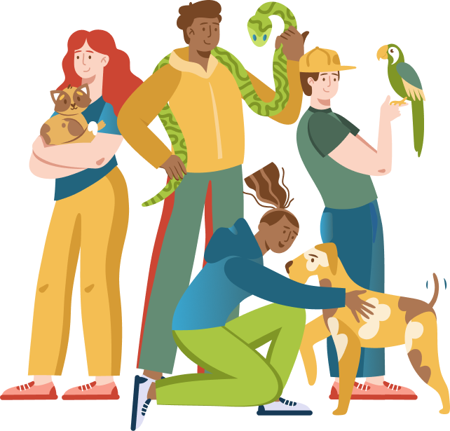
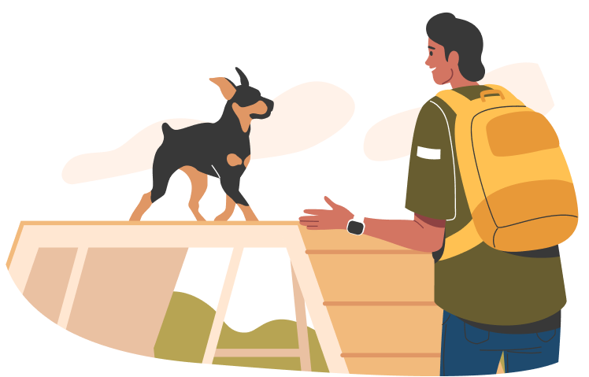

Videos curtos para você começar a usar o app agora mesmo.

Junte-se a outros tutores e ajude a cuidar dos animais da sua cidade.

Viu um animal na rua? Registre o avistamento e ajude quem está procurando.

Com alertas na sua região, aumentam as chances do seu pet voltar para casa.
Como baixar e instalar o app no seu celular
Como reportar um pet perdido ou um animal avistado
Alertas, comentários e como explorar o mapa